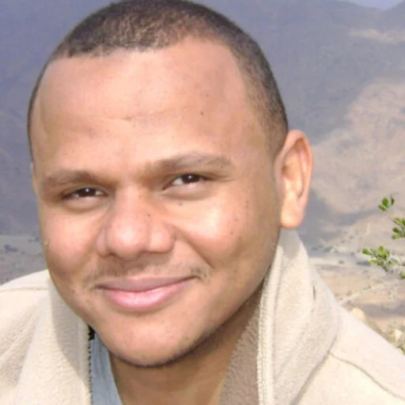
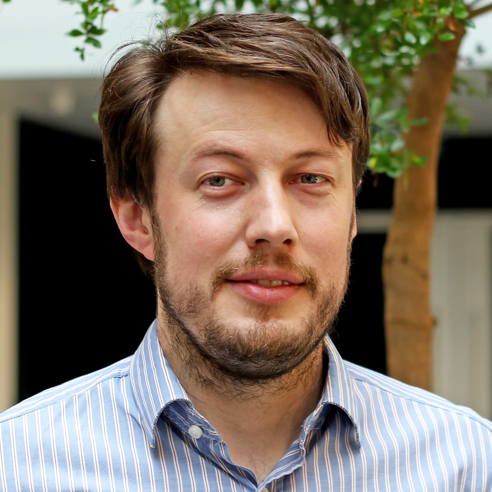
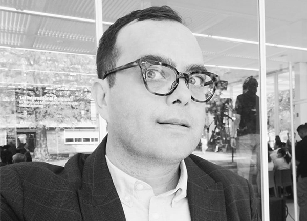
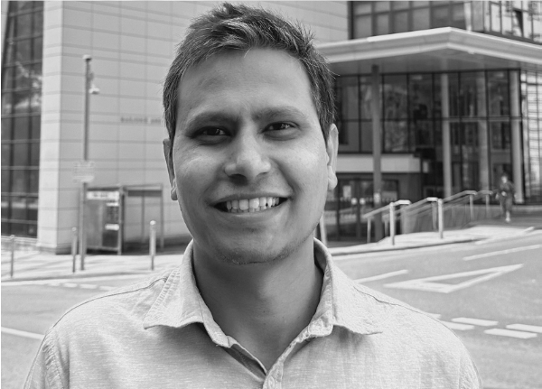

Bridging the gap between research innovation and clinical impact in medical imaging AI
The MÉTIS (Multidisciplinary Evaluation and Translation in Imaging and CAI Science) programme is an educational and mentoring initiative designed to bridge the gap between innovation in medical imaging AI and computer-assisted intervention (CAI) and their successful translation into clinical practice.
MÉTIS brings together clinicians, researchers, data scientists, engineers, industry partners, and regulators to develop the skills needed to evaluate, validate, and deploy AI technologies safely and effectively in healthcare. Through structured mentoring and cross-society engagement, the programme supports clinical practitioners and trainees, computational researchers, and postgraduate students working across medical imaging and intervention sciences.
Through workshops, tutorials, roundtable discussions, and collaborative projects, MÉTIS aims to train the next generation of leaders capable of developing clinically robust, trustworthy, and deployable AI technologies that improve patient care.
Metis — the ancient Greek goddess of wisdom, practical intelligence, and strategic thinking — embodies exactly what is needed for the translation of MICCAI methods into the clinic. She is a symbol for bringing together different forms of knowledge, aligned with our workshop's goal of uniting clinical practice, imaging, AI, and computational science.
Following MICCAI, participants will be invited to join a structured multidisciplinary mentoring programme that pairs clinicians, computational researchers, industry experts, and senior academic mentors. Through regular interactions and cross-society engagement, participants will be supported in identifying clinically relevant research questions, building collaborative teams, and developing competitive research proposals and translational projects. The long-term goal of MÉTIS is to cultivate a sustainable international community capable of advancing clinically robust, reproducible, and deployable AI and CAI technologies that deliver meaningful impact on patient care.
Connecting clinical needs with medical imaging AI expertise from the MICCAI community
MÉTIS invites clinicians, radiologists, pathologists, surgeons, and medical practitioners working with medical imaging to submit Clinical Proposals. This program aims to pair clinicians who have diagnostic questions or dataset bottlenecks with computational scientists and AI experts from the MICCAI community. Together, they will co-design and validate translational AI systems. Selected proposals are invited for a short pitch/talk at the MÉTIS workshop in Strasbourg, France, and enrollment in our year-long mentoring program.
Key milestones for the MÉTIS workshop at MICCAI 2026
Keynotes, presentations, and structured networking bridging the clinical-AI gap
Our opening keynote will address the clinical-AI gap & the need for integrated evaluation, regulatory awareness, & translational readiness in MIC & CAI. Following presentations of accepted papers & case studies will focus on innovative evaluation methodologies, clinically meaningful metrics, regulatory pathways, & real-world deployment challenges. A concluding interactive discussion during the poster session will synthesize outcomes & propose a multi-society task force to guide sustained activities, incl. workshops, shared curricula, & coordinated initiatives beyond MICCAI 2026.
Introduction to the workshop objectives, organizers, and timeline.
Speaker: TBD
Presentations from leading experts bridging medical imaging and clinical translation.
Networking session over coffee accompanied by poster presentations of accepted works.
Interactive roundtable discussions on key clinical sub-themes to identify research bottlenecks and build partnerships:
Synthesis of outcomes and finalizing the transition of round tables into the year-long mentorship program.
Top clinical proposals and collaborations will be recognized based on key impact criteria
Feasibility and depth of the clinical-computational partnership
Significance and clarity of the clinical bottleneck being addressed
Potential translational value and patient outcomes of the proposed AI system
Availability, organization, and labeling status of the medical imaging dataset
An interdisciplinary team spanning clinical imaging, computational AI, and translational research





